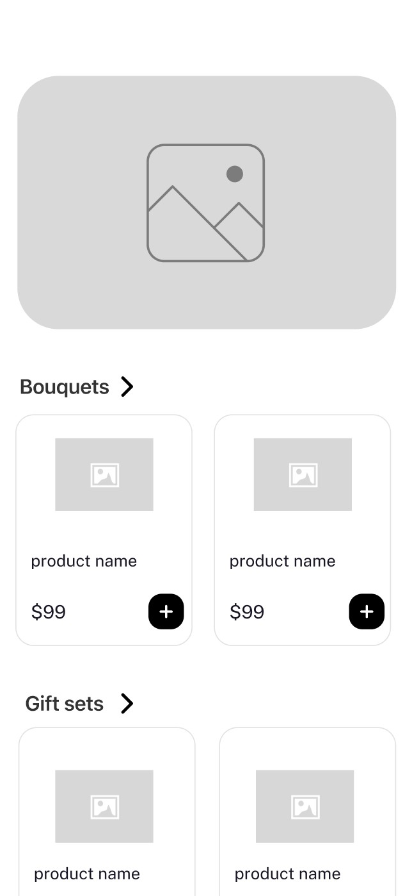
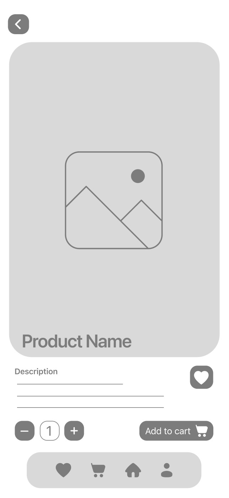
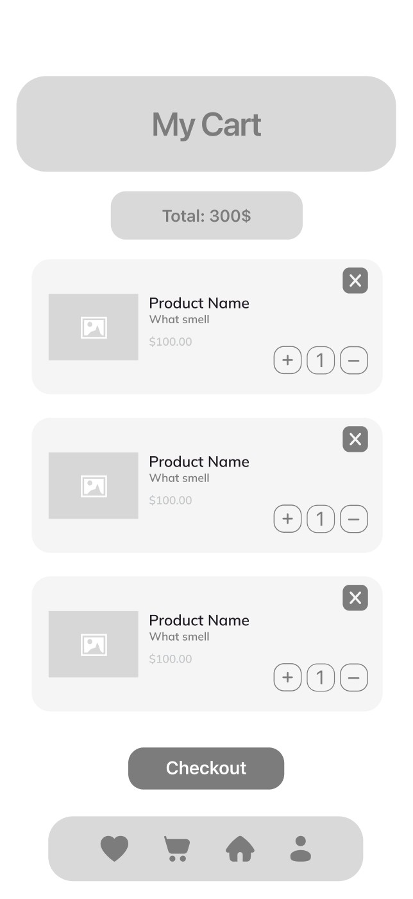
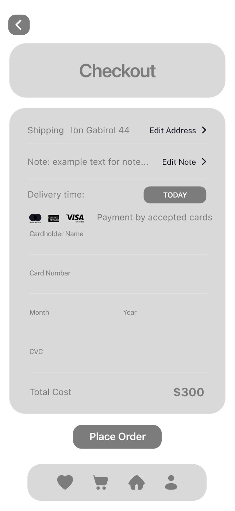
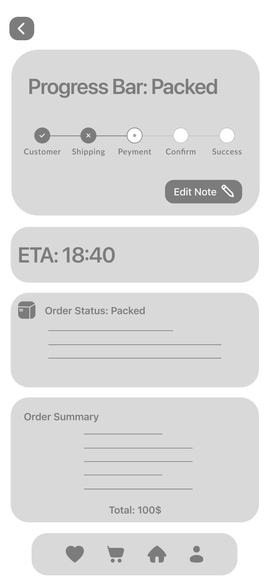
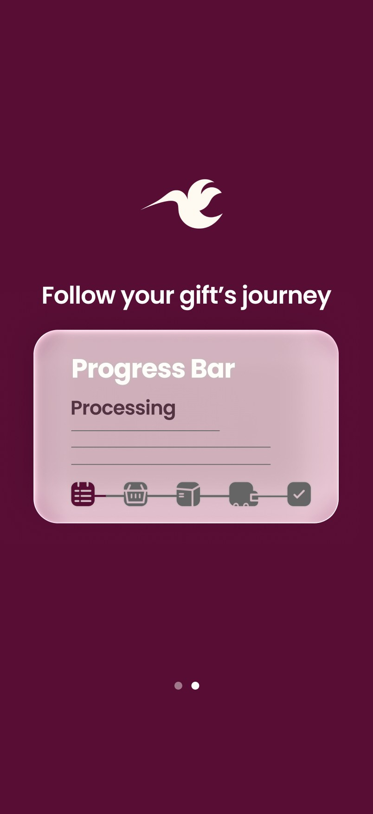
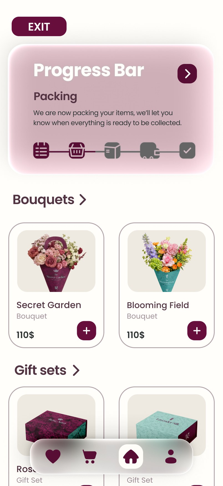
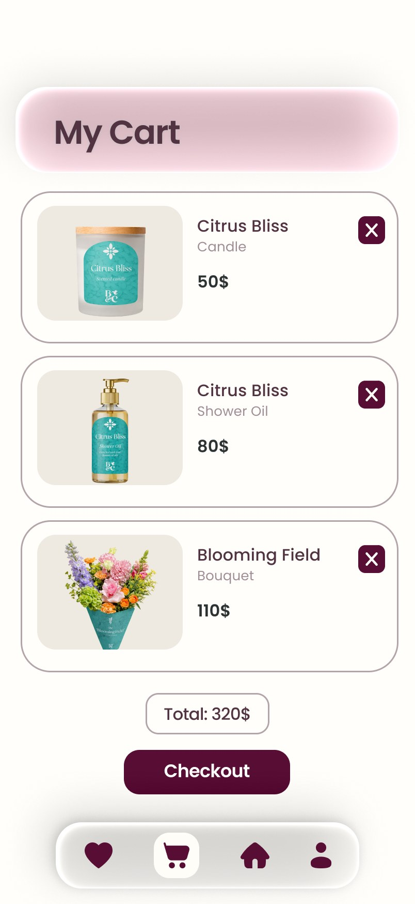
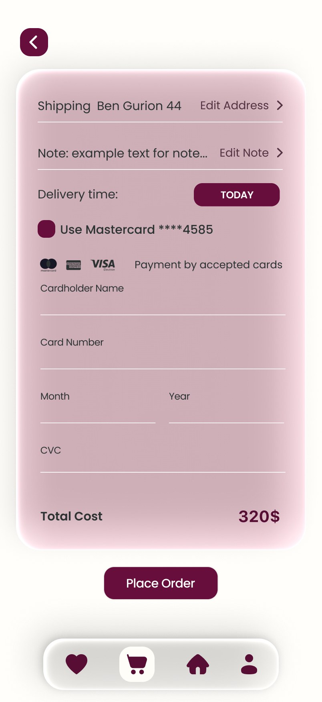
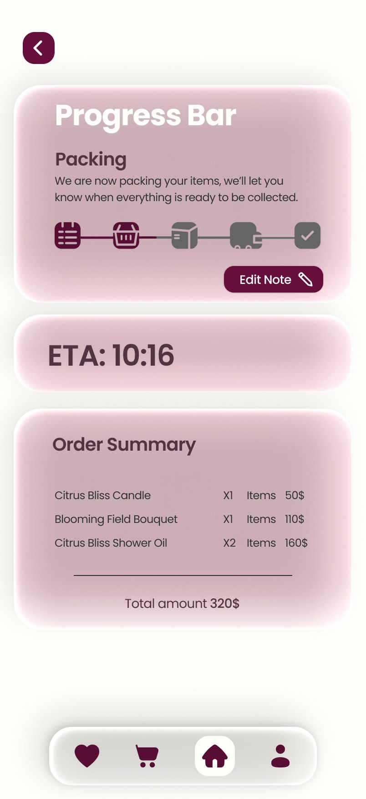

A gift that lingers.
Eternal spring.
A boutique flower and lifestyle brand, and the app that makes gifting worry-free.
Blume & Co treats flowers as an experience rather than decoration, and gifting as an intentional act rather than a social obligation. I built the brand from its strategy to its packaging, and designed B&C, its own app for sending luxury gifts with confidence: what you see on the screen is exactly what arrives, exactly on time.
Beauty, not despite being fleeting. Because of it.
Like the Japanese love for cherry blossoms, Blume & Co embraces beauty because it doesn't last. Each bouquet and lifestyle piece is designed to turn a passing moment into a lasting memory.
A world where flowers are moments, not decoration, and gifting is guided by intention.
Floral arrangements and lifestyle pieces that turn gifting into a meaningful experience.
The name and the promise
01Blume & Co
02Eternal spring
03For whom
From a hummingbird to a whole garden.
The icon started as three options: a flower, a bee and a hummingbird. The hummingbird won, with wings that grew more fluid and a rounder, calmer body. Light, graceful and full of life.
Inspired by colors with history: Tiffany blue, a symbol of refined gifting, and Tyrian purple, linked to royalty and rarity since ancient times.
One illustration for every scent and every bouquet.


A gift is a business card.
For the app, I asked people how they send gifts today, what makes it feel easy, and where it goes wrong. People don't see a gift as a product. They see it as a reflection of their taste, their care and their reliability.
I'd love to get a real photo of the delivery before it leaves, to make sure it's what I expected.
The unboxing is my business card.
Not 500 products. The 10 best ones.
Fast, or premium. Rarely both.
| ZER4U | BUYME | Wolt | B&C | |
|---|---|---|---|---|
| Quick, simple ordering | ✓ | ✓ | ✓ | ✓ |
| A physical, premium gift experience | ~ | ✓ | ||
| The brand controls delivery end to end | ✓ | ✓ |
What I took from it
01Trust is visual
02Timing is part of the gift
03Calm beats choice
The problem isn't the flowers.
Delivery platforms don't let senders accurately track a gift or commit to a delivery window, even when timing is critical. The result is anxiety, and a feeling that the money and emotion put into the gift might go to waste.
give senders full control and peace of mind,so what they see is what arrives,exactly when it was promised?
What I chose to build first
01Must have: a clear progress bar
02Must have: live updates and ETA
03Must have: only what matters now
04Nice to have, and later
The order, always in sight.
Four tabs and a curated catalog: bouquets, gift sets and all items. When an order is on its way, its progress bar sits at the top of Home.
Delivery time is chosen at checkout, and the note to the recipient can be edited while the order is being prepared.





Wireframes for the core flow: home, product, cart, checkout and progress.
Quiet luxury, in your pocket.
Floral white, Tyrian purple and soft frosted cards. The products get the space, and the progress bar gets the spotlight.





What I'd test next.
01Does tracking really calm people down?
02A photo before it leaves
03Reminders for the dates that matter
I started Blume & Co from a habit of stopping to photograph flowers wherever I go. Designing the app taught me that luxury isn't only in how something looks. It's also in how calm it makes you feel. The brand promises beauty, and the app has to keep that promise all the way to the door.
Did you make someone smile today?